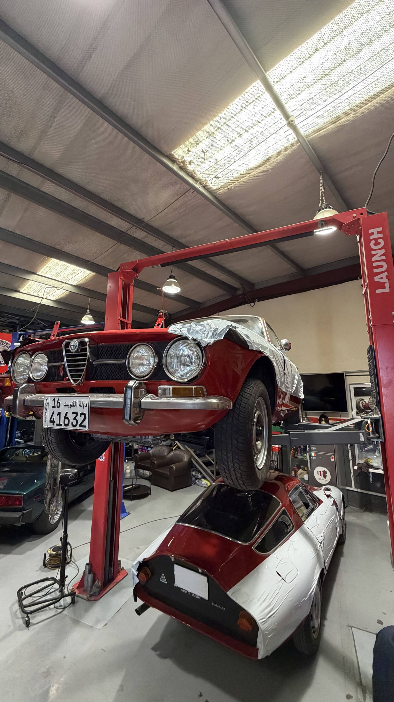

Alfa Romeo Engine Rebuild in Dubai: What Owners Should Know
An engine rebuild is one of the most involved jobs any car can go through. For an Alfa Romeo, it demands more than mechanical competence. It requires an understanding of how these engines were designed to work, what their known failure points are, and what an honest rebuild actually means. This is what we do at Autotech, and it's what we're doing right now with a Berlina that came to us all the way from Kuwait.
What an engine rebuild actually involves
The term "engine rebuild" gets used loosely. In some garages, it means replacing a few worn parts and reassembling. A proper rebuild is something different: a full strip, inspection of every component, replacement of anything that has worn beyond tolerance, and reassembly to the manufacturer's specification.
For Alfa Romeo engines, this process includes measuring bore wear, checking crankshaft journals, inspecting the timing system, assessing valve seats and guides, and verifying oil passages are clear and functioning. Nothing is assumed. Every measurement is taken and compared against spec.
The reason this matters is that Alfa Romeo engines — particularly the 2.0 turbocharged unit in the Giulia and Stelvio, and the 2.9 V6 Biturbo in the Quadrifoglio — are not forgiving of shortcuts. Both are precision-built engines with tight tolerances. A rebuild done correctly extends the life of the car significantly. A rebuild done poorly creates problems that take months to surface.
When does an Alfa Romeo engine need a rebuild?
The most common reasons we see Alfa Romeo engines come in for rebuild work:
- Oil consumption that has progressively worsened over time, despite no obvious external leak
- Loss of compression in one or more cylinders
- Knocking or rattling from the bottom end, particularly on cold start
- A timing chain or belt that has been neglected beyond its service life
- Coolant contamination in the oil — or oil in the coolant
- Post-accident teardown where the engine condition is unknown
Some of these arrive with obvious symptoms. Others, particularly compression loss in the early stages, can be subtle. Regular servicing at the right intervals is the best early warning system — which is one reason Alfa Romeo diagnostics Dubai owners shouldn't skip.

Why the workshop matters as much as the parts
Alfa Romeo servicing in Dubai is available at plenty of garages. Engine rebuild work on a classic or performance Alfa is a much shorter list. The difference is not just experience with the brand — it's the depth of familiarity with how specific models behave, what the common failure patterns are, and what the factory tolerances actually require.
General workshops often work off generic engine rebuild kits and standard procedures. A specialist knows that a Giulia engine has specific requirements around bearing clearances, that the Quadrifoglio's dry sump system needs particular attention during a strip, or that older classic Alfa engines have casting characteristics that demand a different approach to boring and honing.
This isn't gatekeeping. It's the practical reality of working on cars that were engineered to a specific brief. Alfa Romeo diagnostics and rebuild work rewards specialist knowledge and punishes guesswork.
The Berlina project currently underway
We currently have an Alfa Romeo Berlina in the workshop for a full engine rebuild. The client drove it in from Kuwait, which says something about the difficulty of finding the right garage for this kind of work. The engine has been stripped, measured, and is being rebuilt component by component to the standard the car deserves.
Classic Alfa Romeo engines have a character to them that's worth preserving. The Berlina is not a common sight on UAE roads, and bringing one back to full mechanical health is the kind of project that takes time and attention. We're treating it accordingly.
What to expect if you bring your Alfa to us
We don't quote for engine work sight unseen. The first step is always a proper inspection — whether that's a pre-purchase inspection, a diagnostic session, or a preliminary strip — so we can give you an honest picture of what's actually needed.
From there, Alfa Romeo servicing Dubai owners can expect clear communication about what we found, what we recommend, and why. No unnecessary work. No vague estimates that balloon mid-job. If a full rebuild is needed, we'll explain exactly what that involves and what it costs before anything gets approved.
If the work can be done with a partial rebuild or targeted component replacement, we'll tell you that too. The goal is the right outcome for the car, not the largest invoice.
Speak to Autotech about your Alfa Romeo.
Whether you're dealing with an engine concern, an overdue service, a diagnostic fault, or an Alfa you want properly assessed before buying — we're the right garage for it.
Get in Touch